Mitra Kerjasama
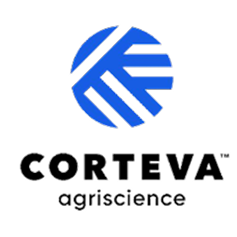
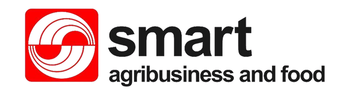
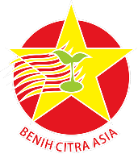
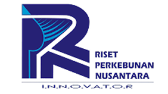
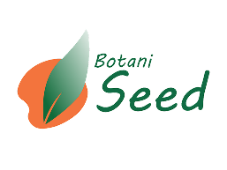

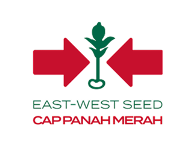
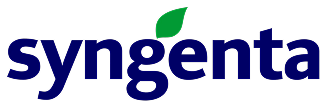
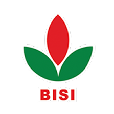
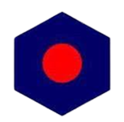
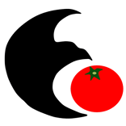
Selamat datang di website resmi
Varietas benih unggul dengan teknologi pemuliaan terkini.
Kemitraan kuat dengan industri benih untuk kesiapan karier.
Siap bersaing dalam industri teknologi benih modern.
Berperan aktif mendukung ketahanan pangan masa depan.
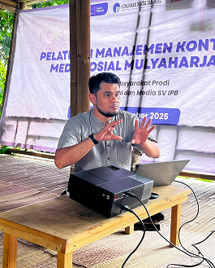
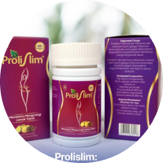
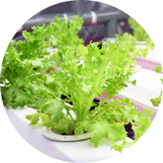
Menciptakan Sumber daya manusia yang berkualitas
Mengembangkan teknologi terapan yang unggul
Menyebarluaskan teknologi benih yang inovatif guna
Menjalin kerja sama Nasional dan Internasional









